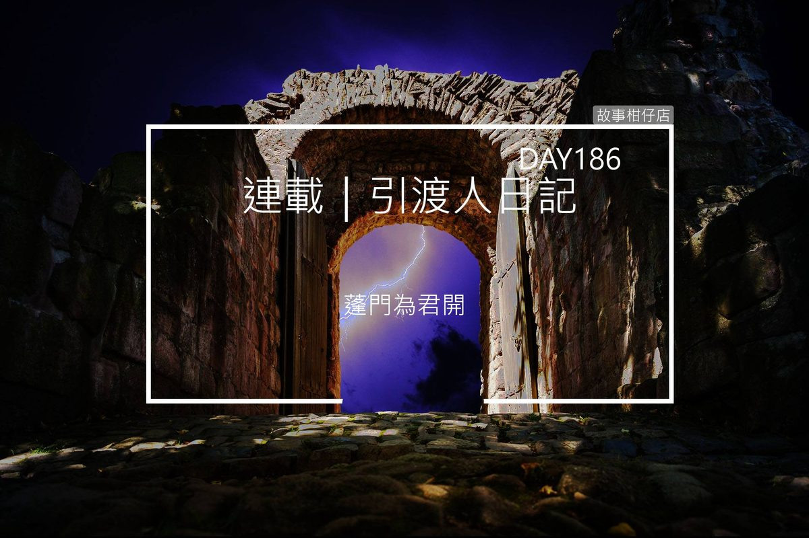

引渡人日記 day 186（二）蓬門為君開

到了。不知經過幾百次、再熟悉不過的鬼門關，如今變得很陌生。
高聳入雲的牌樓，入口擋下一整面雲彩般的玉石牆，高不可攀，牢不可破。然而，那理當十分美麗的牆面，卻濺上了幾道怵目驚心的血跡。
幾隻看守鬼門關的大小鬼們奄奄一息躺在牆角，我衝上前查看，獠牙鬼的頭被削去了三分之二，掉在一邊的腦袋，眼睛還怔怔望天；銅環鬼掛在耳、鼻、頸、鎖骨的銅環全數被扯掉，皮膚破洞、汩汩冒血。
見我走近，銅環鬼沾滿血的利爪揪住我衣領，斷斷續續地說：
「幹，沒守住，快走，他……還在。」
擠出這麼一句話，他的爪子便鬆開了，整副身軀也癱軟下去。
我的雙腿也跟著軟了，站不起身。
忽然，身後傳來一股強勁氣流，竟是一名身穿鎧甲、眉心頂鮮紅八卦圖樣之人朝我移形換影而來。他舉刀抵住我的喉嚨，說：
「百憂，大哥好不容易救出我們，你難道要當個叛徒嗎？！」
不知道為什麼，他一開口，我就認出他是……八方凶神的雨曝！
「大哥？你、你是說春蘼嗎？」我忍著恐懼，想拖延一點時間。
「怎麼？投胎太久，連大哥是誰都忘了？！」
雨曝暴喝一聲，雙手高舉大刀，眼看就要揮了下來。霎時間，他身後衝出一團物體，將雨曝撲倒在地，兩人滾成一團。
長毛鬼！
「快開門！援軍……到了！」長毛鬼一向梳得油亮光滑的毛髮變得凌亂不堪，沾血後結成骯髒球狀，他的左臂不見了，卻用著僅剩的三肢牢牢扣住雨曝的肩及胯下，讓敵人無從施力。
大夢初醒。我握緊從沃焦石下取來的鑰匙，直往玉石牆奔去。忽然聽見慘烈哀嚎，原來是雨曝凌空躍起，故意背對著岩石跳去，讓墊在他身後的長毛鬼狠狠摔在堅硬的石頭上。
頓時，我竟不知該繼續往前，或者回頭救他。長毛鬼吃了痛，右臂一鬆往外揮去，順勢擺盪回來直挖進雨曝眼窩，痛得他仰天吼叫。
「幹！菜逼八！你他媽趕快去開門，不然這條算你的！」
長毛鬼彷彿用盡全身力氣朝我大喊，我捏著鑰匙往前衝，不慎絆了一跤，翻滾了兩圈，撐起身來伸長了手，將鑰匙插進孔洞。
等待門開的那幾秒，像過了幾百年那樣長。我發現有另一支一模一樣的鑰匙掉在旁邊，上頭還掛著小趾骨綴飾。
這……應該就是紫衣能暢行無阻進入地府的原因吧？
玉石牆從中心往四面八方龜裂，縫隙漸大，我忍不住鬆懈下來。轉頭想喚長毛鬼，卻目睹他遭過肩重摔在地，雨曝微微屈膝再一躍，大刀高舉過頭，開天闢地斬了下來。
刀刃觸地，頭身分家，一道血雨噴灑空中，長毛鬼的頭就這麼骨碌碌滾到我腳邊。他雙眼怒睜，扁塌鼻樑佈滿擦傷，牙齒撞斷了好幾顆，染得一張大嘴血淋淋、紅灩灩。
我不敢相信，昨天還在這幹古吹牛的，如今竟全死在眼前。我伸手撫住長毛鬼不瞑目的眼睛，幾乎要哭出聲來。
然而我沒有時間難過。眼窩留著兩行血的雨曝正耍著刀，一步一步朝我走來，他伸出爬滿霉根的手指衝著我吼：
「八方神怎會有你這種叛徒！以為我們不知道，肅秋是你殺的嗎？！」
眼見那把刀就要往我腦門劈來，忽然，一匹馬弧線飛過我的頭頂，那騎士舉劍往外一揮，一眨眼，雨曝脖頸出現條口子，再過兩秒，鮮血如噴泉般湧出。一場紅雨就這麼落了下來，落在土地，也落在獠牙鬼他們的臉面上。
那騎士調轉馬頭，我這才看清楚，他有著豹眼、虎鼻、貔貅嘴，蓄著如莽原般的茂密絡腮鬍。如此粗獷面容，卻襯了一副修長高挑身材，兩者相依倒不違和，反而有股俊朗豪邁之感。
他彎腰割下雨曝的頭，高舉喊道：
「派這貨色，想擋我鍾馗？！」
哇靠！原來他就是鼎鼎大名的打鬼悍將鍾馗？！難怪三兩下就把雨曝收拾乾淨。
「別掉以輕心，地府有大麻煩。」
熟悉女聲自我身後響起，啊！看到那幾天不見的純白洋裝和臭跩臉，我的心安了八成。
白姐瞟了我一眼，當作是招呼。
「正巧我嫌這馬兒太單調，白無常，妳看這樣可好？」
只見鍾馗將雨曝首級繫在馬轡上，馬一跑，那頭顱便晃呀晃的，十分嚇人。
白姐答道：「很挑釁。」
「哈哈哈哈哈！」鍾馗大笑，洪亮聲音震得我耳膜痛，「走吧！咱們這就去平亂，還地府一個清靜！」
鍾馗扯動馬鞭，揚長而去，白姐交代我快跟上，我不敢怠慢，卻忍不住再三回頭，目送那些嘴巴不乾不淨、最愛指使我去買鹹酥雞的傢伙。
獠牙鬼的血乾涸成咖啡色的小池，大夥動也不動，像是一場很無聊的玩笑。而長毛鬼的眼睛是閉上了，唯獨臉龐周圍的毛髮在風中輕輕飄揚。
「先走。放心，我不會讓他們曝屍荒野。」白姐推推我，悄聲說道。
我逞強著挺起胸膛，快步往前。我知道，我們還有要事得辦。